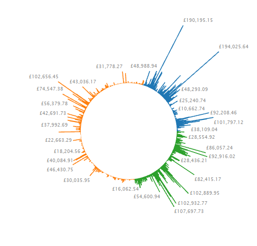
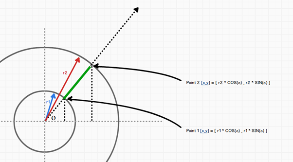

It’s your round at the bar…
In this post, drawing some circular inspiration from the front cover of David McCandless’ Information Is Beautiful, I’m going to take a simple bar chart and wrap it around a circle, for no other reason than to see if it can be done in Tableau. You can argue amongst yourselves as to whether this is a good/meaningful visualisation, but it’s a pretty little thing and has a few nice tricks in it so read it for its educational value rather than an integral part of your next client’s dashboard.
The Chart
We’re going to end up with something a bit like this. The finished visualisation is at the end of the post, complete with a few parameters to let you alter the appearance.

Overview
We will be using Tableau’s line drawing capabilities to draw our graph, so we will need two points for each bar, one positioned on an inner circle and one extending outwards along the same angle. Once we’ve worked out an angle for each of our bars we just dig out some school geometry to break that down into an X,Y plot and we’re pretty much done.

Drawing the green bar requires us to know the two radii and the angle on which the bar is projected.
Step 1: The Data
Normally on a scatter plot you are only plotting individual marks, so you have one row of data per point. However we need two points to define the line so we need to do a bit of work on the data connection. To do this we will use a UNION query to create a second version of the data. In order to keep the field calculations the same the second query will have a few strategically placed zeroes and will introduce a field called PathOrder which will be either a 0 or a 1 depending on whether it represents the start or the end of our lines. We will be using a cut down set of fields from the Sample Superstore (Subset) data source that comes with Tableau.
Connect to the Superstore Sales Subset excel spreadsheet and then use a Custom SQL connection as follows:
SELECT [Orders$].[Product Category] AS [Category],
[Orders$].[Product Name] AS [Item],
[Orders$].[Profit] AS [Profit],
[Orders$].[Row ID] AS [Row ID],
[Orders$].[Sales] AS [Sales],
1 AS PathOrder
FROM [Orders$]
UNION ALL
SELECT [Orders$].[Product Category] AS [Category],
[Orders$].[Product Name] AS [Item],
0 AS [Profit],
[Orders$].[Row ID] AS [Row ID],
0 AS [Sales],
0 AS PathOrder
FROM [Orders$]
Step 2: Table Calcs for Angles and Lengths
The first thing we are going to do is to work out the angle for each bar, and then work out a normalised length for each bar. We used a normalised length to make it easier to specify the size of the internal circle and allow us to fix our axes on the final chart. For the angle we should know that there are 2π radians in a full circle (360 degrees if that’s your thing). For the normalised length we are going to make the outer circle radius for the largest bar in the dataset equal to 1, so that means that each bar is going to be a fraction of the length between the two circles i.e. r2-r1
In my worksheet I am going to make the size of the internal circle a parameter called RADIAL_INNER set to 0.2 and the outer circle for the largest bar will be set to 1. I’m from a coding background though and don’t like “magic numbers” in code, so I’ll use a parameter called RADIAL_OUTER and set that to 1. With good naming conventions you can often get code to self-comment, and it gives you more flexibility if you ever wanted to change the value later.
Here are the calculated fields we need to create
RADIAL_FIELD:
[Sales]
RADIAL_ANGLE:
(INDEX()-1) * (1/WINDOW_COUNT(COUNT([RADIAL_FIELD]))) * 2 * PI()
RADIAL_NORMALISED_LENGTH:
[RADIAL_INNER]
+ IIF(ATTR([PathOrder]) = 0 , 0 ,
SUM([RADIAL_FIELD])/WINDOW_MAX(SUM([RADIAL_FIELD])) * ([RADIAL_OUTER]-[RADIAL_INNER]))
RADIAL_X
[RADIAL_NORMALISED_LENGTH] * COS([RADIAL_ANGLE])
RADIAL_Y
[RADIAL_NORMALISED_LENGTH] * SIN([RADIAL_ANGLE])
Step 3: Plotting the Cartesian Coordinates
We are going to have our chart sorted by Category and then by Item so we need to create a combined field. Click Category then Ctrl+Click Item and right-click and select Combine Fields.
- Add RADIAL_X to Columns
- Add RADIAL_Y to Rows
- Select Line as the mark type on the Marks card
- Add Category to Colour on the Marks card
- Add our Combined Category&Item field to Detail on the Marks card
- Add PathOrder to Path on the Marks card
- For RADIAL_X and RADIAL_Y set the table calc to Compute By Category&Item
- Edit each axis so that its range is fixed from -1 to 1
- Format grid lines and axes as you wish
Step 4: Labelling and Parameters
Now we have our chart, the values are not as useful to the user as they have been normalised to help us set the inner circle, so we need the field labels on there (both on the chart and on the tooltips). If you drag the RADIAL_FIELD to Label on the marks card you will see that some labels for the 0 points appear inside the circle, to stop this from happening we create a calculated field that only shows labels above a certain threshold, which I will add using a parameter so it can be changed on dashboards as well as making the table calc self-comment
RADIAL_SELECTIVE_LABEL:
IIF(SUM([RADIAL_FIELD])>[RADIAL_SELECTIVE_LABEL_THRESHOLD], SUM([RADIAL_FIELD]), NULL)
Now all we need to do is put it on a dashboard and set up our parameters to let the user customise the graph.
- Set the RADIAL_INNER parameter to have a Range of Allowable values from 0 to 1 step 0.1
- Set the RADIAL_SELECTIVE_LABEL_THRESHOLD to 100000
- Create a parameter RADIAL_FIELD_USE with available values ‘SALES’, ‘PROFIT’
- Edit the RADIAL_FIELD calc to:
CASE [RADIAL_FIELD_USE] WHEN "Sales" THEN [Sales] WHEN "Profit" THEN [Profit] END

Conclusion
Whilst it may not be the most informative of views it is a good example of how you can make Tableau draw visualisations that are a little out of the ordinary. Like I said at the beginning, sometimes you do things just to see if you can, so here’s the viz to prove it can be done! Hope you enjoyed the post, feel free to leave comments / ask questions below.


Posted in: Blog
Leave a Comment (12) → English
English
Very nicely done, and your explanation is crystal clear. Knowing how Tableau’s abilities can be leveraged to good effect is highly beneficial – showing how something’s done, in addition to simply publishing a workbook with the implementation, is tremendously useful in helping people achieve the understanding.
Dave – this is bloody brilliant!!! I feel like I shouldn’t, but I love it! I think it could be appropriate in some situations. Thanks so much for providing the instructions.
Cheers!
Dave,
This is slick. I really think this could be useful in a sense of looking at say the delta between forecasted units/dollars vs actuals. Any other ideas ?
Thanks,
Joshua
Thanks for the comments I’m glad you’ve enjoyed the post even if it is a little unorthodox. Don’t feel guilty though Kelly, embrace the educational value of learning to use tableau as a data-driven drawing tool, that’s how I justified it to myself anyway…
As to whether there are any actual implementations, I think it would depend largely on whether its aesthetic qualities could add to the users understanding, or whether a circular image in the centre of the chart gave greater context. I think adding circular reference lines to the background might help. Maybe something like points about sea level around the equator (or any other given latitude or longitude supplied by a parameter).
I’ll put my thinking cap on and try to find some “real” data to play with… if you’ve got any more ideas though I’d love to hear them.
thanks for reading!
Dave
Hi Dave
I totally love this view. Tableau should provide this as a default chart type IMHO.
Cheers
@paulbanoub
http://www.vizninja.com
Dave.
This is phenomenal. Even though some viz experts might have a diff opinion, this is a crowd pleaser.
..kk
Dave, great job. There’s one usage in particular that this chart is great for – time series data where you want to show values over the 24 hours in a day, minutes in an hour, or seconds in a minute. If you show these on a flat x axis, it’s difficult to follow any patterns as you go from 11PM to midnight, 59 minutes (or seconds) to 0 minutes.
Depending on the pattern of the data, you can maybe help by moving the day/hour/minute start to the middle of the flat x-axis (you can manually sort the minute discrete pill; select all of the 0 to 29 entries if you’re looking at minutes, and hit move down 30 times..).
However, the radial bar chart is a much better way to understand the data. Thank you for this.
If you do choose to use this for time period data, with minute or hour taking the place of row ID, you need to change RADIAL ANGLE to:
-(INDEX()-1) *
(1/WINDOW_COUNT(COUNT([Minute]))) * 2 * PI() +(pi()/2)
The minus reverses the direction so the clock is clockwise (!), and the extra pi/2 moves the 0 minute or hour to the top.
Dave, love your creativity and imagination!
Hi Dave,
This post was a brilliant view to understand how to plot a bar chart radially. I am trying a similar plot but using line chart to plot time series around a circle. I have 12 months of plot and i want to divide the circle into twelve equal sectors and plot the time series around it. Should i be using the similar translation for plotting the x,y co ordinate….Let us know your thoughts.
Thanks,
AP
Hi AP,
definitely you could use a similar approach. you wouldn’t need to do the union as you wouldn’t need two plotting points for each data point. you’d need to change the RADIAL_ANGLE field to remove the IF statement because you wouldn’t have a PathOrder field anymore, and you’d have to change the calculation there to make it line up on time rather than a straight fraction of the circle based on record count. You’d also need to make sure that the path order was correct to make it draw the line in the correct order. The easiest way to do that would be to create an INDEX() field and send that the same way as the RADIAL calcs and then drop that on “Path”. But yes, it could be done using the same sort of geometry with just a few changes.
Good Luck!
Dave
Hi Dave,
This post was really helpful. But i want to know can we fill the inner circle with a color??
Thanks.
Tapaswini